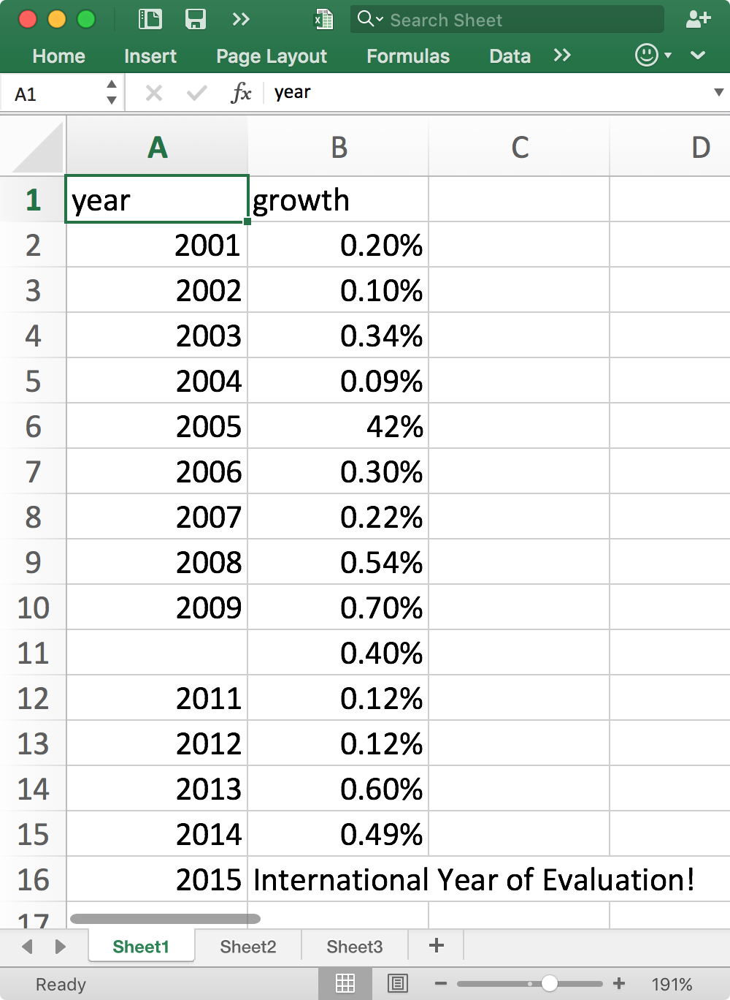
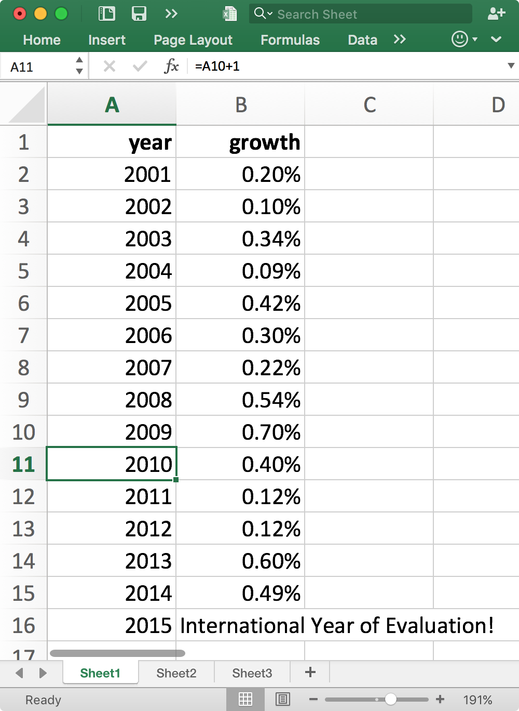
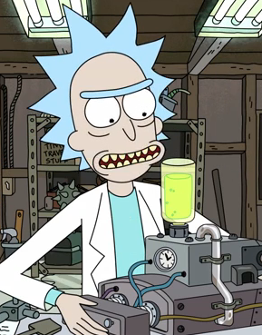
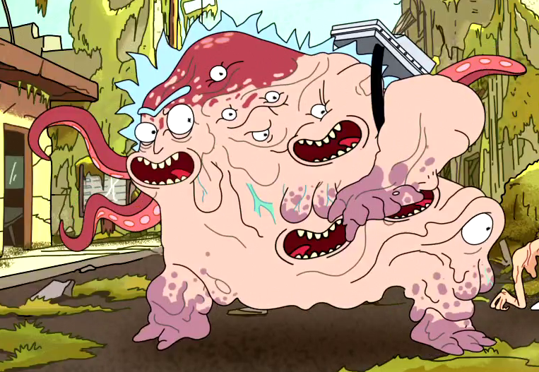
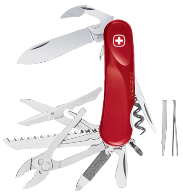

Creative Data Science
Thursday November 12, 2015
A “Brown Bag Lunch” “Chalk Talk” for the World Bank Group IFC (International Finance Corporation) RMES (Results, Measurement and Evaluation Stream) on Thursday November 12, 2015. (slides)
This is the flier the World Bank folks made:

Here are some questions the audience was asked to answer and discuss before things got rolling:
- What are you reading?
- What is your favorite tool, process, or technique for your work?
- What is your least favorite tool, process, or technique for your work?
- What was the last new tool, process, or technique you learned (or are currently learning)?
- What would you like to learn next?
The text below starts out fairly complete, and then toward the end it's more demo and telegraphic notes to myself.
@planarrowspace
Hi! I'm Aaron. This is my blog and my twitter handle. You can get from one to the other. This presentation and a corresponding write-up (you're reading it) are on my blog (which you're on).

I was invited to give a talk about “the data scientist's toolbox”.
A lot of people, when they hear “the data scientist's toolbox”, think of programming languages, or particular suites of implementations like Hadoop or Spark.

So here's a tool!
It's the AlexNet deep convolutional neural network, which was state of the art for identifying things in images a couple years ago. We could use a Caffe Model Zoo implementation, which would still have the 11-by-11 convolutions on the first layer, but likely wouldn't split the computation across two GPUs that way, yadda yadda yadda, this kind of thing is relevant to some of the work my current company is doing, yadda yadda yadda.
This might be interesting for some people, but for a lot of people I suspect it would not be directly useful.
“Be regular and orderly in your life so that you may be violent and original in your work.”
I came across this Flaubert quote somewhere, and I like it quite a lot.
The tools I want to focus on help me to be regular and orderly in my everyday work.
Being regular and orderly in everyday work means that everyday work becomes easier, leaving capacity for more sophisticated work.
From the other side, even if your work is very sophisticated, you still have to attend to the everyday, and life will be better if it is well attended.
Another way to think about tools is to weigh what's more important to the painting, the painter or the brush?
Certainly you need both, and tools are more or less a requirement everywhere. But the mental tools, the skills and experience of the painter, these make the lion's share of the difference in the end results.
I haven't taught painting, but I've taught “data science tools” for a number of years, and my overwhelming impression has been that mental tools matter more than the particular software people happen to use.
The good news is that while you may not always be able to choose your tools, you can always choose (and improve) the self that you bring to them!

The first question I asked earlier (“What are you reading?”) may have seemed not to be about tools, but it is. Reading builds you new tools.
Here's what I'm currently reading: a book called “Debugging Teams”. Good book!
You have a great team here at the World Bank, and I want to point out that you're doing a great thing today, taking your lunch to become even greater. That's exactly the kind of thing that strong teams do.
create
A central point of “Debugging Teams” is the importance of humility, respect, and trust.
In that spirit, let me describe a best-case scenario for our time together:
I will mostly tell you about other people's ideas. (And I may not always cite sources.)
Worse, I probably won't even have quite the right ideas for you.
I'm going to talk about some things that I think help create good work with data.
But I sure don't have your expertise, experience, and other knowledge about everything that you're working on.
This kind of event doesn't make sense if it's just me talking and then everybody goes back to working exactly the same as they always do.
You've come together in this safe collaborative space. The people who should get something out of it are you. What will you go on to do that you wouldn't have done if you weren't in this room today? This is a chance for you to think up something great! It could be the opposite of what I suggest, or totally unrelated. Today could be the day you have that great idea that saves the world!
Create!
- immutability
- separation of concerns
- interoperability
- message-passing
These are the key ideas that I want to explore today. It's okay if they don't make sense now.
[demo]
This bit is a kind of game.
I'm going to do a demonstration with Excel, which I understand some of you have seen before, and I want you to evaluate what I do.
It's as simple as "Aaron did X, and it was good (or bad) because Y."
After I finish, we'll discuss in pairs and try to get a list of twelve such evaluations.

Here's what important_stats.xlsx looks like originally.

Here's what important_stats.xlsx looks like after we're done with it.
Discussion!
- good things?
- bad things?
- WWYD?
That's "What Would You Do".
Let's get twelve things!
immutability
What is this?

Here is normal Rick.
Until he does some weird chemical things.

Rick is mutated! Old Rick is gone! He's all Cronenberg'ed up!
destroy ≠ create
Old Rick has been destroyed, which is the opposite of creative. We want to make things, not destroy them!
When I saved over the original version of the file, I destroyed it! It is gone forever!
reproducible research
What is research that isn't reproducible? Wrong!

Make new versions! It's a DAG now!
[demo]
Using important_stats_20151111.xlsx.

git is the real answer.
separation of concerns
This is concept two.
- entry/editing
- storage
- calculation
- presentation
These are all things that we were doing in Excel.

Some people use "Swiss Army knife" as a kind of compliment, but I don't think it should be. You've got a knife and a screwdriver, but you almost certainly have your very worst knife and your very worst screwdriver.
At least for tools, usually a jack of all trades is a master of none.
It can be convenient to have a Swiss Army knife around, but it isn't the tool of choice when a professional goes to work.
[demo]
Use Excel to change values, save as CSV; now we have data entry and storage separated.
interoperability
Choose tools that work together! Multiply possibilities!
“The idea is not to replace one tool with another but rather build a better ecosystem of complementary tools.”
This is a quote from a presentation given by Jeffrey Heer.

Interview person who only works with other club members.
open standards
Some standardization is necessary, but it should be open and Free!
text text text text text text
Text is great!
git example: lots of vendors, etc. Not locked in!
languages: tools for making tools
R and Python!
[demo]
Write it in R! In RStudio! Yeah! (See important_mean.R.)
Using R just for calculation!
Add cowsay for presentation!
Rscript important_mean.R | cowsayRepeat with Python! In Emacs! Yeah! (See important_mean.py.)
Using python just for calculation!
Add cowsay for presentation!
python important_mean.py | cowsay __________________
< 0.00331428571429 >
------------------
\ ^__^
\ (oo)\_______
(__)\ )\/\
||----w |
|| ||message-passing
Saw some with the connections between R, Python, and cowsay.
How does anyone know what I'm working on? The changes I've made? etc.
Publish widely! Making available is different than notifying!
Give your paper to someone else!
- immutability
- separation of concerns
- interoperability
- message-passing
Wrapping up!
Thanks!
Thank you!
@planarrowspace
This is just me again.